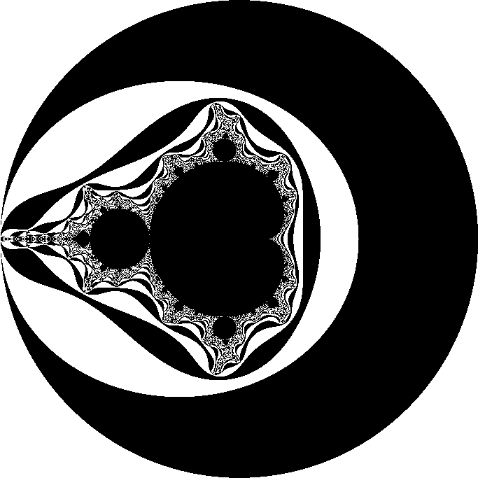

Fractals are endlessly complex patterns that are self-similar across different scales.
mandelbrot.c
void
mandel(Uint32 *dst)
{
int width = 640, height = 480, max = 254;
int row, col;
for(row = 0; row < height; row++) {
for(col = 0; col < width; col++) {
double c_re = (col - width / 1.5) * 4.0 / width;
double c_im = (row - height / 2.0) * 4.0 / width;
double x = 0, y = 0;
Uint32 iteration = 0;
while(x * x + y * y <= 4 && iteration < max) {
double x_new = x * x - y * y + c_re;
y = 2 * x * y + c_im;
x = x_new;
iteration++;
}
putpixel(dst, col, row, (iteration % 2) * 0xFFFFFF);
}
}
}
Mandelbrot without fixed point
See the complete SDL2 source.
mandel(-2.0 * NORM_FACT, -1.2 * NORM_FACT, 0.7 * NORM_FACT, 1.2 * NORM_FACT);
typedef unsigned char Uint8;
typedef signed char Sint8;
typedef unsigned short Uint16;
typedef signed short Sint16;
#define NORM_BITS 8
#define NORM_FACT ((Sint16)1 << NORM_BITS)
Uint16 WIDTH = 600;
Uint16 HEIGHT = 400;
int
iterate(Uint16 real0, Uint16 imag0)
{
Uint8 i;
Sint16 realq, imagq, real = real0, imag = imag0;
for(i = 0; i < 255; i++) {
realq = (real * real) >> NORM_BITS;
imagq = (imag * imag) >> NORM_BITS;
if((realq + imagq) > (Sint16)4 * NORM_FACT)
break;
imag = ((real * imag) >> (NORM_BITS - 1)) + imag0;
real = realq - imagq + real0;
}
return i;
}
void
mandel(Sint16 realmin, Sint16 imagmin, Sint16 realmax, Sint16 imagmax)
{
Uint16 x, y,
deltareal = (realmax - realmin) / WIDTH,
deltaimag = (imagmax - imagmin) / HEIGHT,
real0 = realmin,
imag0;
for(x = 0; x < WIDTH; x++) {
imag0 = imagmax;
for(y = 0; y < HEIGHT; y++) {
putpixel(pixels, x, y, iterate(real0, imag0));
imag0 -= deltaimag;
}
real0 += deltareal;
}
}